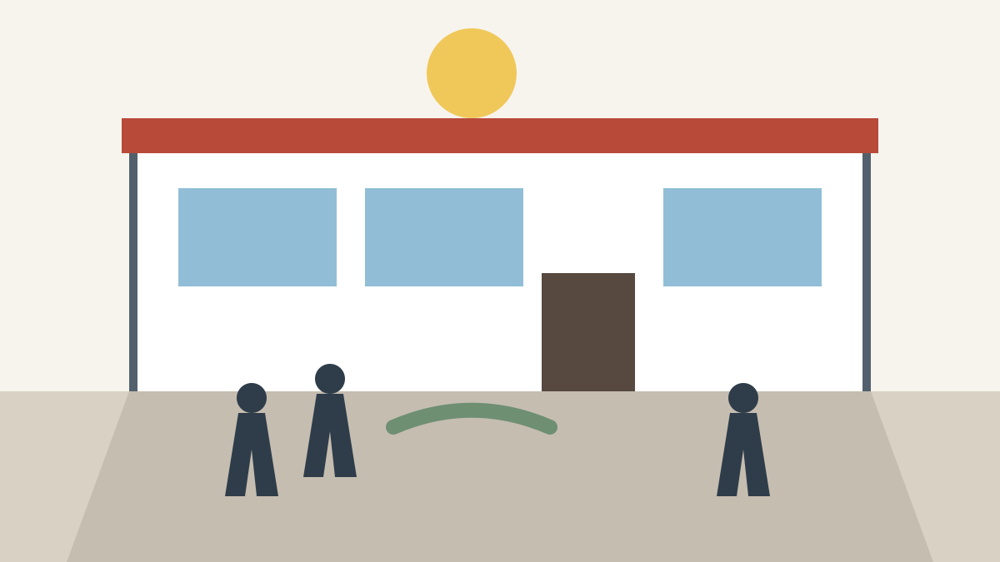

Students cross the campus green between morning classes.
The library entrance provides a central meeting place for study groups.

The student center hosts events, dining, and organization fairs.
Slide 1 of 3